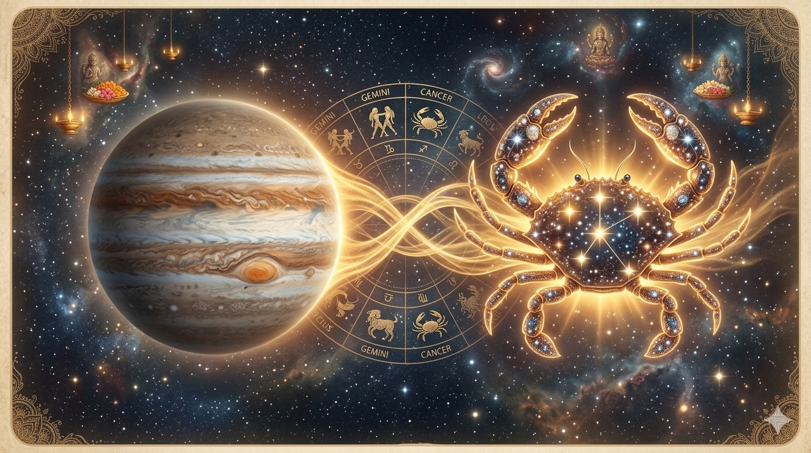

12 वर्षों में एक बार, देवगुरु बृहस्पति कर्क राशि में प्रवेश करते हैं। यह वह राशि है जहां गुरु सर्वाधिक बलवान होते हैं। वैदिक ज्योतिष में इसे गुरु का "उच्च गृह" कहा जाता है।
देवगुरु बृहस्पति देवताओं के दिव्य शिक्षक और मार्गदर्शक हैं। श्रद्धालु बुद्धि, पारिवारिक शांति, विवाह, संतान, समृद्धि और सही निर्णय लेने की क्षमता के लिए उनसे प्रार्थना करते हैं। माना जाता है कि उनकी सौम्य और कृपालु दृष्टि जीवन के सबसे कठिन और पुराने कष्टों को भी शांत कर देती है।
जब गुरु अपने इस विशेष घर में विराजते हैं, तो इस पावन काल में की गई प्रार्थनाएं और पवित्र अनुष्ठान अधिक फलदायी होते हैं। यही कारण है कि पूरे भारत के मंदिरों में विशेष दीप प्रज्वलित किए जाते हैं, और श्रद्धालु आने वाले वर्ष के लिए उनका आशीर्वाद प्राप्त करने हेतु एकत्रित होते हैं।
यह दुर्लभ गुरु गोचर आपकी राशि के अनुसार आपके धन, करियर, विवाह, पारिवारिक जीवन, मानसिक शांति और सफलता को प्रभावित कर सकता है।
—
—
—
परम सुरक्षा और दिव्य संरेखण के लिए प्रत्येक ऊर्जा का आह्वान किया जाता है।
ईश्वर करे कि देवगुरु की असीम कृपा के इस पावन क्षण में आपका जीवन सुखमय हो।
🙏 ॐ गुं गुरवे नमः 🙏